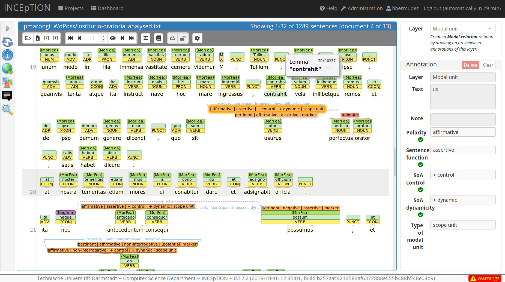
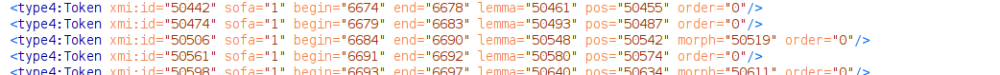
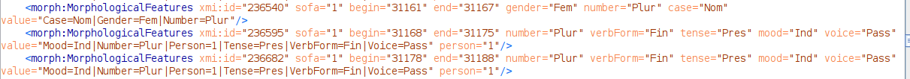
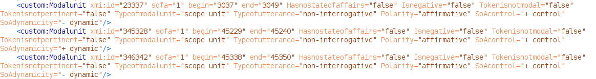
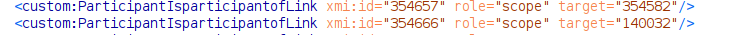
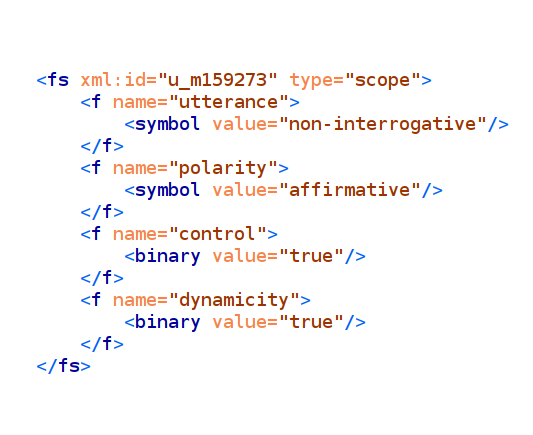
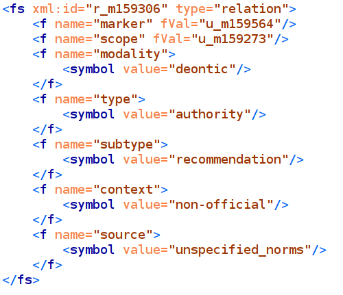

Multi-format publishing and re-purposing of historical linguistics data
Helena Bermúdez Sabel
University of Neuchâtel
Outline
- Introduction
- the WoPoss project as an use case
- research question and goals
- An open science workflow
- Multi-format publishing as a re-usability strategy
- Conclusion
Introduction
The WoPoss project
- A world of possibilities. Modal pathways over an the extra-long period of time: the diachrony of modality in the Latin language. SNF project n° 176778
- The team:
- PI: Francesca Dell’Oro
- Senior researcher: Helena Bermúdez Sabel
- PhD student and project assistant: Paola Marongiu
The WoPoss project
- Research question: how have Latin modal markers evolved during a long period of time (1000 years)?
- Method: automatic linguistic annotation + manual semantic annotation of a representative corpus
WoPoss as an extrapolable use case
- Generic goals
- to have an annotated corpus that it is useful and shareable
- to have a GUI that it is useful and intuitive
WoPoss as an extrapolable use case
- Generic challenges
- source text retrieval: copyright, philological quality, heterogeneity of formats
- preprocessing: orthographic conventions, abbreviations, editorial information
- annotation: pipeline, tool-dependency, formats
- publication: formats
An open science workflow
Corpus preparation
- Text retrieval (online, open-source)
- Homogenization
Source example: TEI-Epidoc
Source example: HTML
Plain text transformation
- Evaluation of each file
- Conversion of typographical conventions and/or markup to pseudo-markup
- Plain text output
Automatic linguistic analysis
- Input: plain text
- Method: StanfordNLP library for Python (Stanza)
- Output: CONLL-U
CONLL-U
Manual annotation
Output: UIMA CAS XMI
- Exportation of results of annotation process: UIMA CAS XMI
- Unstructured Information Management Applications: standard for annotation
- Feature structures are represented in the UIMA Common Analysis Structure (CAS)
XMI snippets
   TEI transformation
- More spread format than UIMA CAS in the DH community
- More suitable to contain editorial information


Correction and enrichment
- Validation (and correction) of the annotation and/or textual issues
- Transformation of pseudo-markup into TEI elements
- Addition of metadata (DHTK, Picca & Egloff 2017)
Diachronic semantic maps of modal markers
- Initial source: synthesis of lexicographical works
- To be reviewed with the results of the corpus-based, empirical analysis


Important remarks
- Use of standardized formats during the workflow
- Dependance of external software: free and open source
- Creation of customized programs tailored to the project specifications: open source
Multi-format publishing as a re-usability strategy
Data sharing
- Dataset
- Plain text version of the sources texts: useful for computational analyses
- Diachronic modal semantic maps in JSON, SVG and PNG. Interactive version online
- Results of the automatic annotation in CONLL-U format
Data sharing
- Dataset
- Results of the semantic annotation in:
- UIMA CAS XMI
- TEI
- RDF/XML (see LiLa: Linking Latin)
- Results of the semantic annotation in:
- GUI
- Web application
- Dataset and GUI functionalities as an eXist-DB application
Conclusions
Multi-format publishing and specialized target users
- FAIR principles (both during development and results)
- Sharing of materials at every stage of development